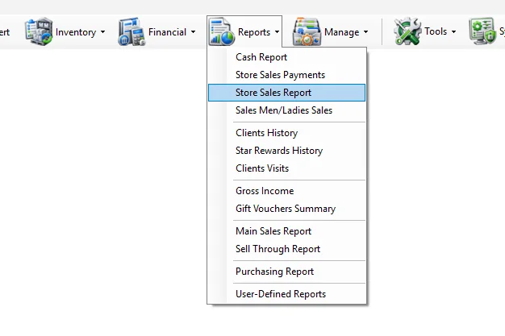
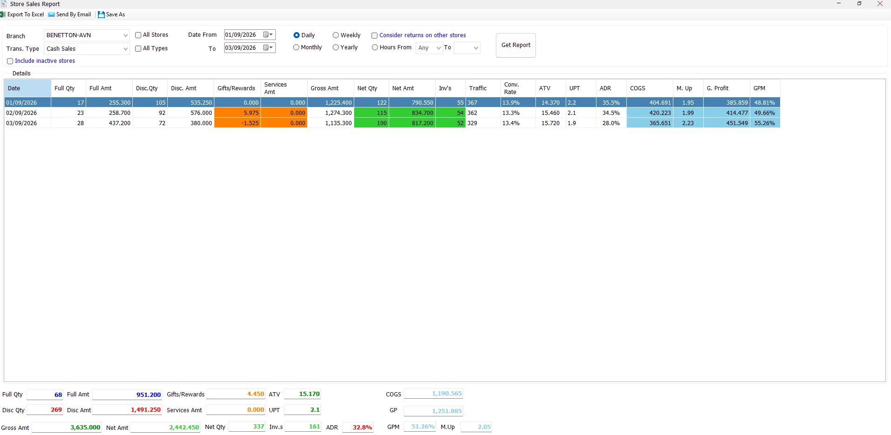
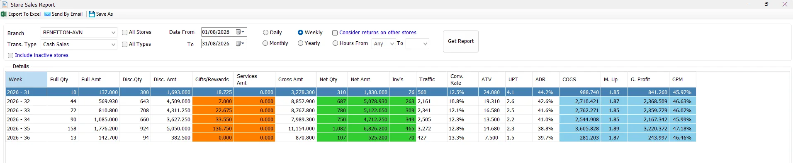
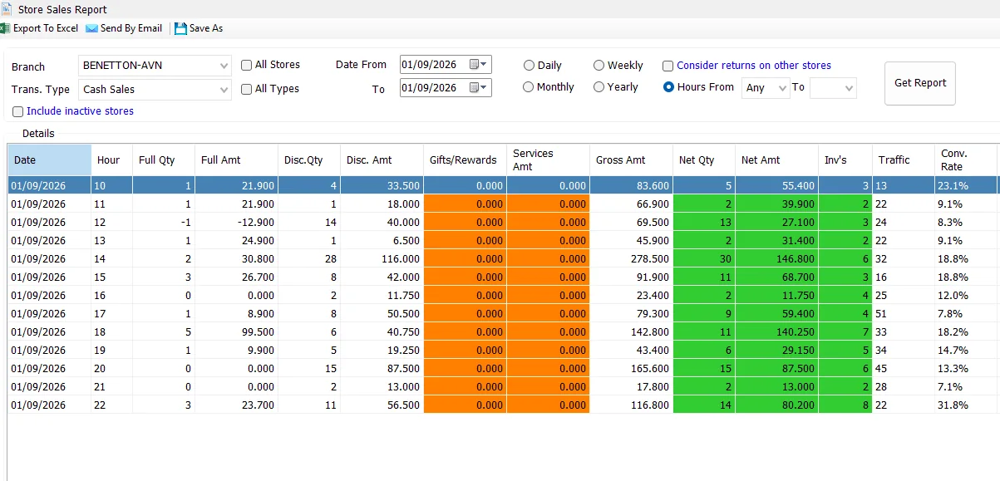
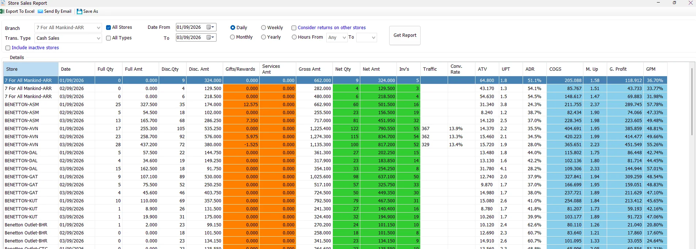

Store Sales Report
The Store Sales Report is designed for fast store-performance analysis. It summarizes sales and returns by store and by time period, and can combine the results with V-Count traffic to show conversion rate.

Run a report
- Select a Branch, or enable All Stores.
- Select Cash Sales, Credit Sales, or enable All Types.
- Select the Date From and To.
- Choose the reporting period: Daily, Weekly, Monthly, Yearly, or Hours From.
- If required, enable Consider returns on other stores or Include inactive stores.
- Click Get Report.

Report criteria
| Option | What it does |
|---|---|
| Branch | Selects the store to report when All Stores is not enabled. |
| All Stores | Runs the report for all stores available to the user and adds a Store column to the result. |
| Trans. Type | Selects Cash Sales or Credit Sales. |
| All Types | Combines cash and credit sales/returns in one report. |
| Include inactive stores | Loads inactive stores into the store list for historical reporting. This option is available to users with all-store access. |
| Date From / To | Defines the date range. The report initially uses the IMS working date. |
| Consider returns on other stores | Uses the cross-store-return reporting logic so returns processed in another store can be considered against the related sales store. |
How transaction types are combined
The Store Sales Report consolidates the corresponding sale and return transaction codes:
| Selection | IMS transactions included | Conversion counts |
|---|---|---|
| Cash Sales | Cash Sale (51) + Cash Return (53) | Cash Sale (51) only |
| Credit Sales | Credit Sale (52) + Credit Return (54) | Credit Sale (52) only |
| All Types | 51, 52, 53 and 54 | Sales 51 and 52 only |
Daily, weekly, monthly, yearly and hourly views
The period option changes how IMS groups the same selected date range:
| View | Result grouping |
|---|---|
| Daily | One row per date, and per store when All Stores is selected. |
| Weekly | Rows are grouped by calendar year and week number, displayed as Year - Week. |
| Monthly | Rows are grouped by calendar month and year. |
| Yearly | Rows are grouped by calendar year. |
| Hours From | Rows are grouped by date and hour. Choose Any to show all hours, or choose a From/To hour range. |


When you switch between Daily, Weekly, Monthly and Yearly, IMS can immediately refresh the report. Selecting Hours clears the current output so the hour criteria can be set before running the report.
All Stores
Enable All Stores to compare branches in one report. IMS disables the Branch selector and adds the Store column so each period is shown separately for each store.

Columns and KPI formulas
| Column / KPI | Meaning in IMS |
|---|---|
| Full Qty / Full Amt | Net quantity and amount for lines without item discount. |
| Disc. Qty / Disc. Amt | Net quantity and amount for discounted lines. |
| Gifts/Rewards | Gift/reward amount reported separately from merchandise net sales. |
| Services Amt | Service amount reported separately. |
| Gross Amt | Gross sales value before discount, with returns reflected in the report. |
| Net Qty | Full Qty + Disc. Qty. |
| Net Amt | Full Amt + Disc. Amt. |
| Inv's | Sale + refund invoice/transaction count represented by the row. |
| ATV | Net Amt ÷ Inv's. |
| UPT | Net Qty ÷ Inv's. |
| ADR | Average discount rate: 1 − (Net Amt ÷ Gross Amt). |
| COGS | Full Cost + Discounted Cost. |
| M. Up | Net Amt ÷ COGS. |
| G. Profit | Net Amt − COGS. |
| GPM | Gross Profit ÷ Net Amt. |
The summary boxes at the bottom recalculate the same KPIs across all displayed rows. ATV and UPT are calculated from the overall Net Amount / Net Quantity divided by the total invoice count; ADR, Markup and GPM are also recalculated from the report totals rather than averaged from row percentages.
Traffic and Conversion Rate
IMS matches the sales result with V-Count data from people_traffic for the same store and period.
Conversion Rate = sales-only invoice count ÷ Traffic. IMS calculates conversion after the selected period has been aggregated, so a weekly result uses total weekly sales conversions divided by total weekly traffic, rather than averaging daily conversion percentages.
Consider returns on other stores
Normally the report is grouped using the transaction's store. When Consider returns on other stores is enabled, IMS switches to its cross-store-return sales view and uses the related sales-store field for grouping. Use this option when a customer may return an item at a store different from the one where it was originally sold.
Permissions
The report itself appears only when the user has the Store Sales Report permission. Output and financial columns are also permission controlled:
| Permission-controlled feature | Behavior |
|---|---|
| Export To Excel | Visible only when the user can export reports to Excel. |
| Send By Email | Visible only when the user can send report email. |
| Save As | Available together with Excel export permission. |
| COGS | Hidden when the user does not have cost visibility. |
| M. Up | Hidden when the user does not have markup visibility. |
| G. Profit / GPM | Hidden when the user does not have profit visibility. |
Export, email and Save As
Export To Excel exports the current grid. Send By Email sends the report with a subject containing the selected date range. Save As requires a generated report; otherwise IMS asks you to generate a report first.
Common questions
Why is Traffic blank for some stores?
There is no matching V-Count record for that store and period. IMS intentionally leaves Traffic and Conv. Rate blank rather than showing zero.
Why is Conv. Rate not equal to Inv's divided by Traffic?
The Inv's column includes the report's sale + refund transaction count. Conversion uses sales only: code 51 for Cash, code 52 for Credit, or codes 51 and 52 when All Types is selected.
How do I compare every store by day?
Select All Stores, choose Daily, set the date range, then click Get Report. The Store column will be added automatically.
How do I see sales by hour?
Select Hours From. Leave the first hour as Any to include all hours, or choose a starting hour and ending hour, then click Get Report.
Why are COGS, Markup or Profit missing?
Those columns are controlled by the logged-in user's IMS permissions.
Store master data, active status and V-Count
The Branch list and inactive-store behavior come from Manage → Stores. A store's Is Active setting determines whether it is treated as active, while Include inactive stores lets the report include inactive Store masters when needed.
Stores configured for Integrate with V-Count can be associated with imported people-traffic data used by the report's Traffic and Conv. Rate columns.
Service sales
Services Amt represents sales from Service Items maintained in Manage → Service Items. Service Items are stored separately from normal merchandise through their Service type.